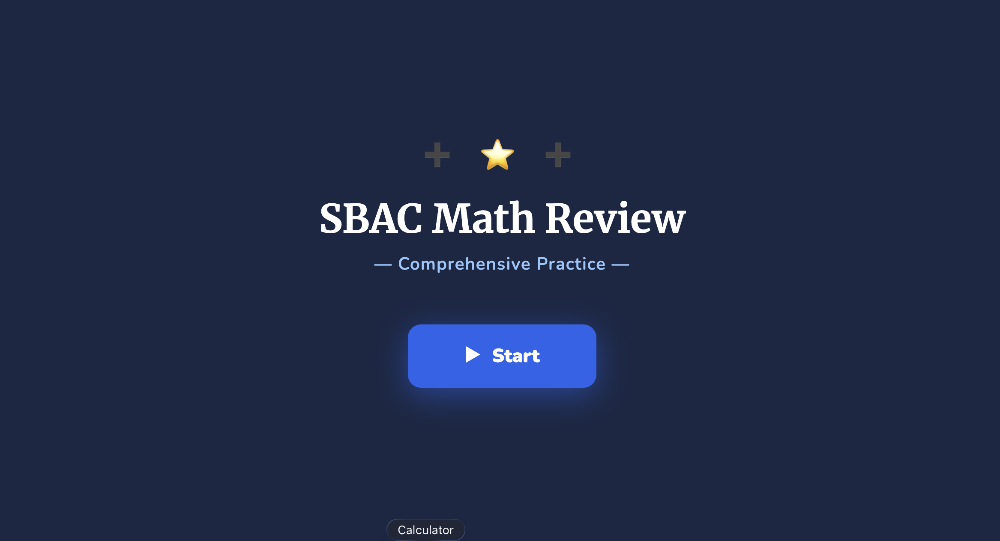
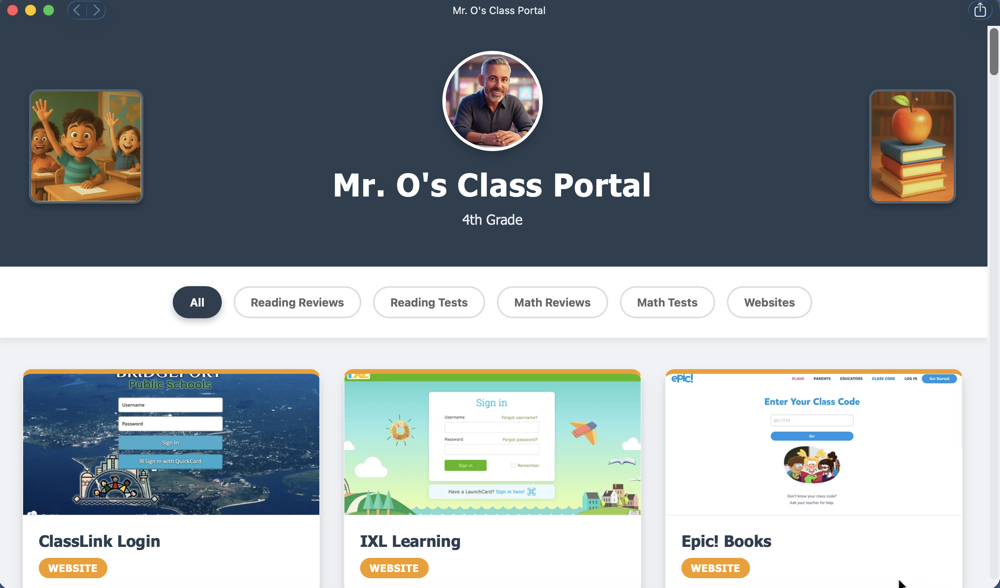

Step 1 of 7 — The Big Idea
🤯 AI Can Build You a Website — Really
When most teachers hear "build a website," they picture months of learning, expensive software, and headaches. With AI, it's completely different.
Think of it like being an architect. An architect doesn't swing a hammer or lay bricks — they describe what the building should look like, and a builder brings it to life. You are the architect. AI is the builder.
The same AI tools you've been using throughout this course — ChatGPT, Claude, Gemini, Copilot — can build complete, working websites. All you have to do is describe what you want.
Step 2 of 7 — What Teachers Are Building
🏫 What Kinds of Sites Can Teachers Make?
Real teachers are using AI right now to build sites like these — without any coding knowledge:





Every site in this hub — the review games, the quizzes, the class portal — was built by describing it to AI in plain English. No coding happened. Just conversation.
Step 3 of 7 — How to Ask
💬 How to Ask AI to Build a Website
The process is simpler than you think. Three things to include in your request:
- What type of site — a quiz, a flashcard game, a class homepage, etc.
- Who it's for — your grade level and subject
- What it should include — the content, questions, links, colors, or style you want
A simple formula that works every time:
That's it. You don't need to say anything technical. AI figures out the rest.
After AI builds it:
- AI gives you the finished site — either a file to download or a preview to view.
- Open it in your browser and see how it looks.
- If anything needs changing, just say so in plain English. Keep refining until it's perfect.
Try one of these ready-to-use prompts:
These are already filled out. Left-click Copy, then open one of these tools in a new tab:
Left-click inside the chat box, right-click and choose Paste, then hit Enter. AI will build the full site for you.
Build me a single-page reading review website for 4th grade students. Include a short summary of the story "Stone Fox" with 5 comprehension questions and a fun fact section at the bottom. Make it colorful and easy to read, with big text and a clean layout. Put everything in one HTML file.
Build me a single-page math practice website for 3rd grade students reviewing multiplication facts from 1 to 10. Include 10 practice problems with a "Show Answer" button for each one, a motivational message at the top, and a colorful number chart at the bottom. Put everything in one HTML file.
Build me a single-page science study guide website for 5th grade students about the water cycle. Include labeled sections for evaporation, condensation, precipitation, and collection. Add a simple diagram description, a vocabulary list with definitions, and 5 review questions at the bottom. Put everything in one HTML file.
Step 4 of 7 — Real Prompts
📋 Copy These Prompts and Make Them Your Own
- Open your AI tool —
 ChatGPT,
ChatGPT,  Claude,
Claude,  Gemini, or
Gemini, or  Copilot — and left-click inside the chat box.
Copilot — and left-click inside the chat box. - Pick a prompt below and left-click Copy.
- Right-click in the chat box and choose Paste.
- Replace anything in [brackets] with your own content.
- Hit Enter and wait for AI to build your site. It may take a few seconds.
- When it's done, AI will give you an HTML file to download — or show you the code in the chat with a Copy code button. Either way, scroll down to the next section to save and share it with students.
Build a single-page quiz website for [GRADE] students reviewing [TOPIC].
Include:
- Title: "[YOUR TITLE]"
- 8 multiple choice questions about [TOPIC]
- 4 answer choices per question
- Green highlight for correct answers, red for wrong
- Score tracker at the bottom
- "Try Again" button at the end
- Colorful, fun design for [GRADE] students
Put everything in one HTML file.
Create a flashcard website for [GRADE] students studying [SUBJECT] vocabulary.
Include these words and definitions:
- [WORD 1]: [DEFINITION]
- [WORD 2]: [DEFINITION]
- [add more words]
The site should:
- Show one card at a time
- Let students left-click to flip and see the definition
- Have Next and Previous buttons
- Show a progress tracker (Card 3 of 10)
- Use a clean, friendly design
Put everything in one HTML file.
Build a class homepage for [YOUR NAME]'s [GRADE] class.
Include:
- A welcome header with the class name
- A weekly schedule showing Monday–Friday subjects
- A "This Week's Assignments" section
- Links to [list your favorite educational sites]
- A motivational quote section
- Bright, friendly colors — [YOUR COLOR PREFERENCES]
Put everything in one HTML file.
Step 5 of 7 — Sharing With Students
🔗 Sharing Your Site With Students
Once AI builds your site and gives you the HTML file, here are the three ways to get it in front of students. Pick the one that fits your situation.
Did AI give you a downloadable HTML file? Just download it — skip to the sharing options below.
Did AI show you code in the chat? Follow these steps first:
- Look for a button that says Copy code at the top of the code block. Left-click it.
- Open a plain text editor — Notepad on Windows or TextEdit on Mac (set to plain text).
- Right-click inside the editor and choose Paste.
- Save the file with a name ending in .html — for example, quiz.html.
- Now choose one of the options below to share it with students.
Option 4 — Put it Online (permanent link, free — takes ~10 minutes to set up the first time)
This gives your site a real web address — like a website anyone can visit anytime. It's the most powerful option but takes a few extra minutes to set up the first time.
- Go to github.com — open a browser tab, type github.com in the address bar, and hit Enter. Left-click Sign up in the top-right corner. Use your personal email (not your school email — school emails sometimes block outside services). Follow the prompts to create a free account.
- Create a new repository — a repository is just a folder on GitHub where your site will live. Once logged in, left-click the + icon in the top-right corner and choose New repository. Give it a name (no spaces — use dashes, like my-quiz). Make sure it is set to Public. Left-click Create repository.
- Upload your HTML file — on the next screen, left-click uploading an existing file. Drag your .html file into the box that appears, or left-click choose your files to find it on your computer. Once it appears in the list, scroll down and left-click the green Commit changes button.
- Turn on GitHub Pages — left-click the Settings tab at the top of your repository. Scroll down until you see a section called Pages in the left sidebar and left-click it. Under Branch, left-click the dropdown that says None and choose main. Left-click Save.
- Get your link — wait about 1–2 minutes, then refresh the page. GitHub will show you a green box with your live link — it will look like yourname.github.io/my-quiz. Left-click it to make sure your site opens correctly.
- Share that link with students — the easiest way is to simply write the link on your board and have students type it in. You can also turn it into a QR code (students point their phone camera at it and the site opens instantly — free tool at qr-code-generator.com), email it to students or parents, or post it in Google Classroom or Microsoft Teams. Your link never expires.
Step 6 of 7 — Try It · Step 7 is optional
✏️ Try It Now
Replace the [brackets] with your own content and paste this into ChatGPT, Claude, Copilot, or Gemini:
Step 7 of 7 — If You Want to Be Daring
📌 Oh, and yes — we said no downloads required. That's still true for everything in Steps 1–6. This one optional bonus step is the single exception, and only if you want AI to handle absolutely every left-click for you.
🚀 Want AI to Do Absolutely Everything?
Everything in this lesson so far still requires a small amount of manual work — copying code, saving a file, uploading to Google Drive. But there's a next level where you don't do any of that.
There's a version of Claude called Claude Code that doesn't just give you instructions — it actually takes action on your computer. It creates the files, saves them, puts the site online, and hands you a live link. All you do is describe what you want.
📥 Step 1 — Download the Claude Code Desktop App
There are two ways to run Claude Code. The desktop app is the friendly one — it looks just like a regular chat window, no scary screens involved.
- Open claude.ai/download — go there in any browser on your Mac or Windows computer.
- Left-click "Download for Mac" (or Windows) — open the setup file when it finishes downloading. It walks you through a simple Next → Next → Install process, just like any other app.
- Drag Claude into your Applications folder — then double-click to open it.
- Sign in with your existing claude.ai account — no new account needed. You're ready.
🔐 Step 2 — Grant the Permissions It Needs
Because Claude Code actually does things on your computer (creating files, opening folders), your Mac or Windows machine will ask you to approve a few permissions. This is normal and safe — it's the same kind of pop-up you see when any new app wants access.
- Allow access to your folders — so it can create and save your website files.
- Allow it to take actions on your screen — a permission pop-up will appear (like the kind you see when any new app needs access to something). Left-click Allow. This is what lets it create and save your files for you instead of just giving you instructions to do it yourself.
- Allow it to open your browser — so it can show you the finished site when it's done.
🛠️ Step 3 — Describe Your Site and Watch It Build
Once it's set up, using Claude Code is exactly like chatting with regular Claude — except it builds instead of just talks.
- Open Claude Code and type your request — it looks like a chat window. Type in plain English: "Build me a 10-question quiz site about the water cycle for 4th graders."
- Watch it work — you'll see it creating files and writing code automatically. You don't touch anything. It's like watching a fast-forward video of someone building your site.
- It publishes the site for you — Claude Code connects to GitHub (a free hosting service) and puts your site online with a real web address you can share.
- You get a live link — copy it, paste it into Google Classroom, and your students can open it immediately. Done.
🆚 How Is This Different From Regular AI?
Every AI tool can build a website for you. The difference is what you still have to do yourself after it's done:
| Tool | Builds your site | You still save & share it yourself |
|---|---|---|
| ChatGPT, Gemini, Copilot, Claude | ✅ Yes | ✅ Yes — you handle that part |
| Claude Code (with permission) | ✅ Yes | ✅ No — it handles that too |
That's the whole idea. You describe what you want, and Claude Code takes care of everything else — including getting it in front of your students.
🤔 Should You Try It?
Here's an honest picture of who this is for:
- ✅ Great if you want a permanent, shareable link for your site — not just a file on your computer.
- ✅ Great if you want to build many sites over time and have them all organized in one place.
- ✅ Great if you're comfortable trying something new and don't mind a small learning curve the first time.
- ⏸️ Wait if you just need one quick quiz for next week — the Google Drive method from earlier in this lesson is faster for that.